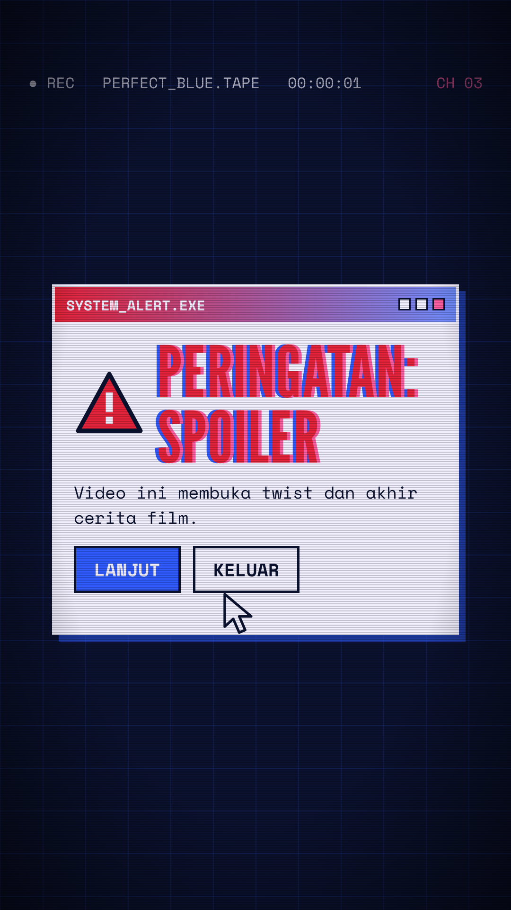
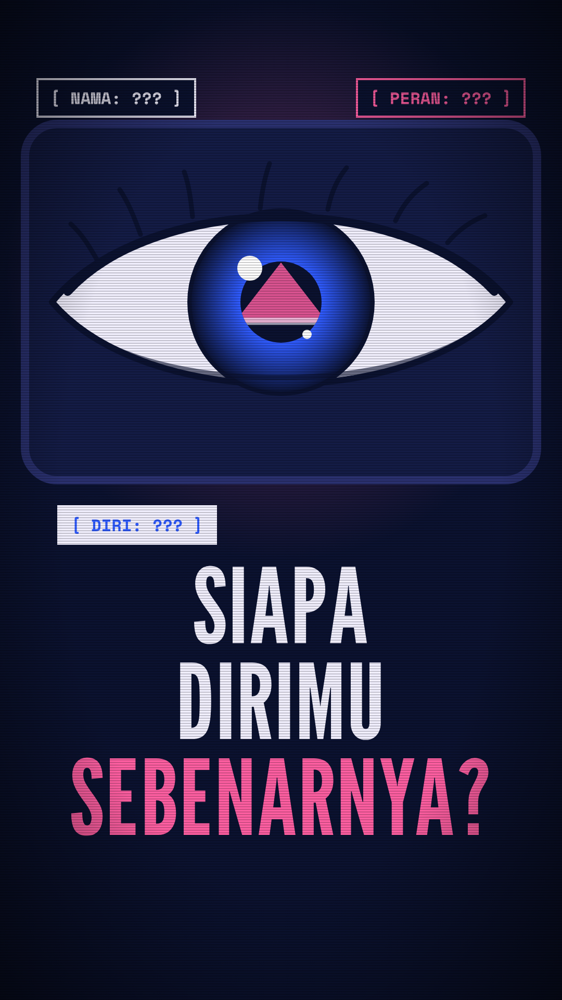
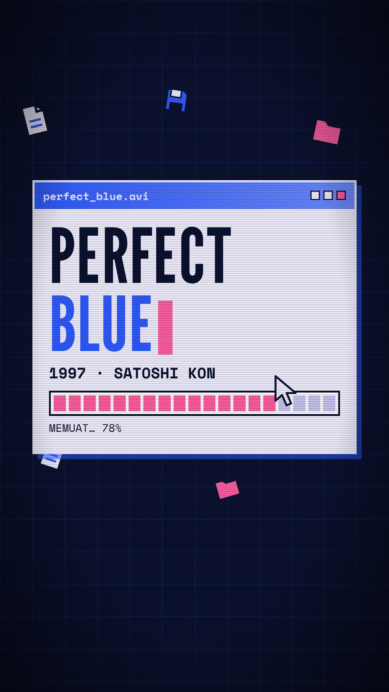
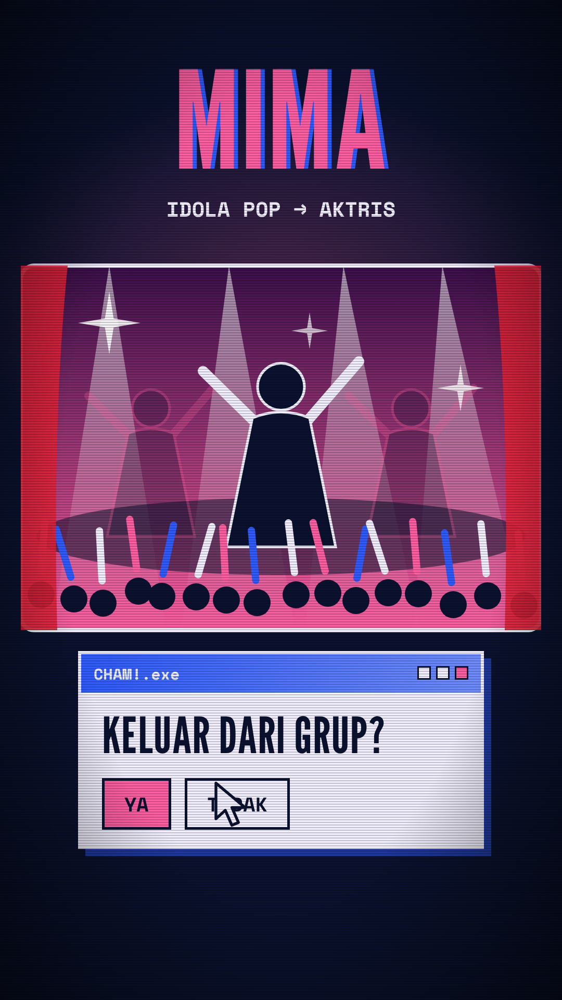
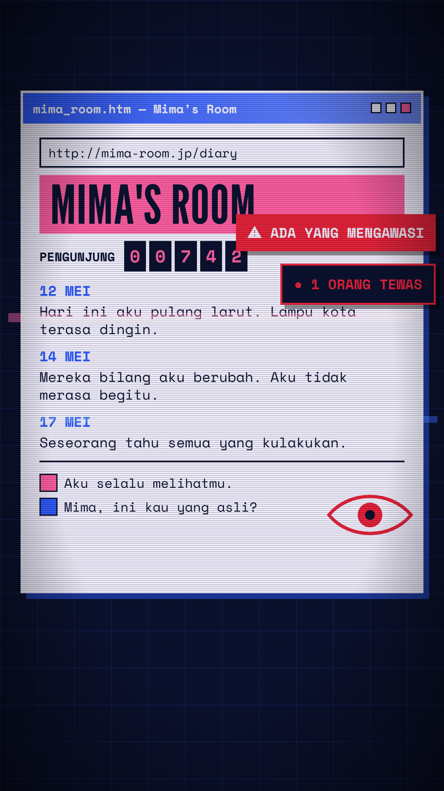
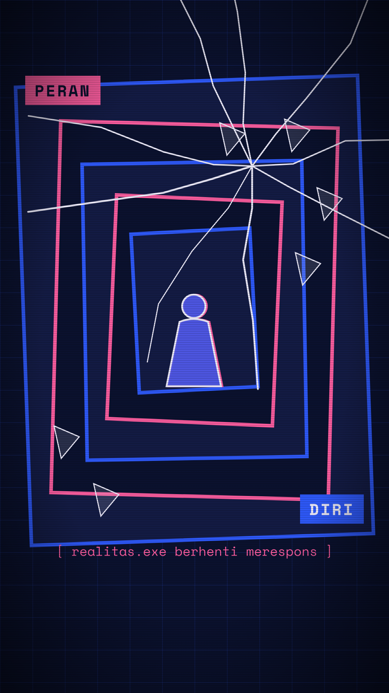
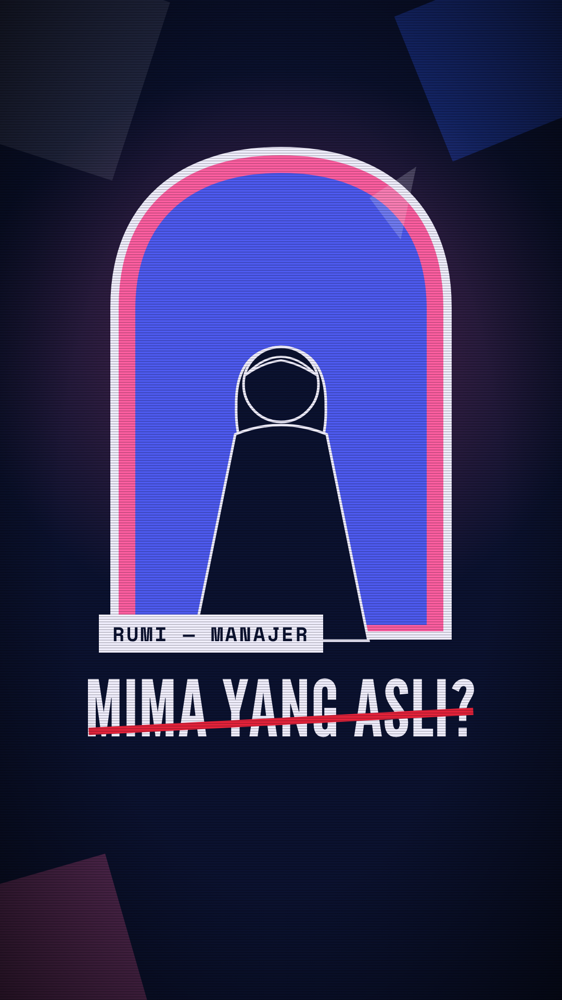
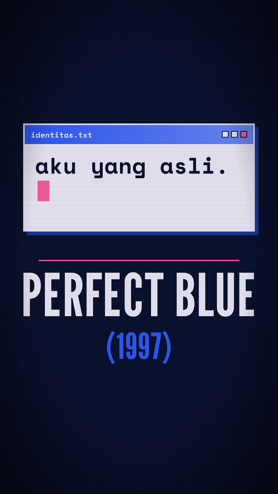

Kotak error OS lama berkedip dengan glitch RGB dan scanline CRT.

Mata besar dalam monitor; satu tarikan zoom-out menembus layar dan cermin.

Jendela OS mengetik judul film, ikon file berjatuhan, bar loading.

Panggung pink, lampu, light stick, siluet idola; kursor menekan 'Keluar dari grup?'.

Jendela browser Mima's Room, penghitung pengunjung, notifikasi merah, glitch.

Jendela bersarang, siluet ganda, label PERAN dan DIRI, cermin retak.

Cermin berisi siluet Rumi, 'MIMA YANG ASLI?' dicoret.

Satu jendela mengetik 'aku yang asli.', lalu kartu judul penutup.